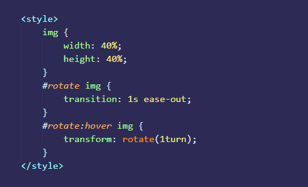

Tìm hiểu về HTML, CSS và JavaScript
1. Giới thiệu chung về HTML
HTML là viết tắt của Hypertext Markup Language, nghĩa là ngôn ngữ đánh dấu siêu văn bản.
HTML được gọi là bộ khung của mọi website.
HTML được tạo ra bởi Tim Berners-Lee, một nhà vật lý học của trung tâm nghiên cứu CERN ở Thụy Sĩ.
Hiện nay, HTML đã trở thành một chuẩn Internet được tổ chức W3C (World Wide Web Consortium) vận hành và phát triển.
Bạn có thể tự tìm kiếm tình trạng mới nhất của HTML tại bất kỳ thời điểm nào trên website của W3C.
Phiên bản đầu tiên của HTML được xuất bản vào năm 1991, bao gồm 18 tag HTML. Năm 1999 phiên bản mới HTML 4.01 được xuất bản,
sau đó năm 2000 các nhà phát triển đã thay đổi ngôn ngữ HTML bằng XHTML.
Cho đến năm 2014 HTML đã được nâng cấp lên thành HTML5 với nhiều tag được thêm vào markup và mục để để xác định rõ nội dung thuộc loại gì.
2. Giới thiệu chung về CSS
Mặc dù ta có thể dùng HTML để thiết kế một website tĩnh, nhưng chỉ với HTML thì về mặt hình ảnh ta sẽ thấy website có rất không đẹp.
Để tạo kiểu cho website trở nên đẹp hơn, khoa học hơn thì ta phải dùng đến CASCADING STYLE SHEETS (viết tắt là CSS).
Cụ thể hơn, CSS chính là công cụ giúp bạn sửa đổi màu sắc, kích thước phông chữ, loại phông chữ, định vị phần tử,...
CSS lần đầu tiên được đề xuất bởi Håkon Wium Lie vào ngày 10 tháng 10 năm 1994. Vào thời điểm đó, Lie đang làm việc với Tim Berners-Lee tại CERN.
Một số ngôn ngữ định kiểu khác cho web đã được đề xuất cùng lúc và các cuộc thảo luận về danh sách gửi thư cộng đồng cũng như đồng thuận trong
World Wide Web Consortium dẫn đến CSS W3C đầu tiên (CSS1) được phát hành vào năm 1996. Đặc biệt, một đề nghị của Bert Bos có ảnh hưởng
hơn đó là ông trở thành đồng tác giả của CSS1 và được coi là đồng sáng tạo CSS.
3. Giới thiệu chung về JavaScript
JavaScript là một ngôn ngữ lập trình mạnh mẽ, linh hoạt và nhanh chóng hiện đang được sử dụng để phát triển trang web khi chúng
ngày càng phức tạp và hơn thế nữa. JavaScript không phải là một ngôn ngữ lập trình độc lập, nó được tích hợp và nhúng vào HTML
để hỗ trợ việc cải thiện sự sống động của trang web HTML.
Ta có thể hiểu đơn giản HTML là bộ khung của một Website, CSS dùng để trang trí cho Website, còn JavaScript được dùng để làm Website sống động hơn.
Về lịch sử ra đời và phát triển: JavaScript được biết đến lần đầu tiên vào tháng 9 năm 1995, được tạo bới Brendan Eich một nhân viên của công ty Netscape của Mỹ.
Ban đầu nó có tên là Mocha, sau đó đổi thành Mona, rồi thành LiveScript cuối cùng lấy tên JavaScript và phát triển thành một ngôn ngữ thông dụng trong thiết kế Website như hiện nay.